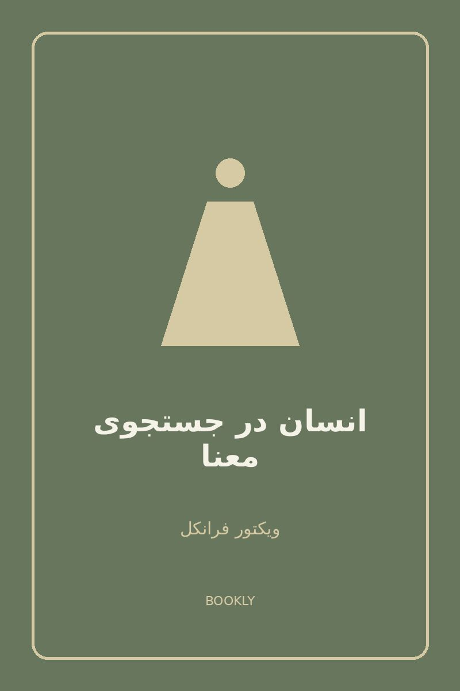

روانشناسی
انسان در جستوجوی معنا
ویکتور فرانکل
انسان در جستوجوی معنا اثری تأملبرانگیز از ویکتور فرانکل است که درباره معنای زندگی، امید و پیدا کردن هدف در شرایط دشوار صحبت میکند. این کتاب نگاه متفاوتی به زندگی و تجربه انسان دارد.
نظر کتابخوانها
کتابی بسیار تأملبرانگیز بود و باعث شد بیشتر درباره معنای زندگی و هدف انسان فکر کنم.
مطالب کتاب عمیق و تأثیرگذار بود و دیدگاه متفاوتی نسبت به زندگی ارائه میدهد.